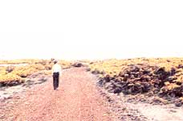
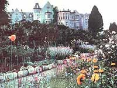
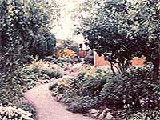
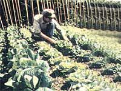
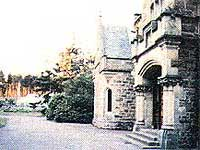
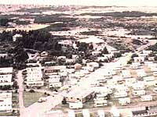
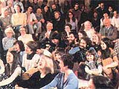

"I want you to see this center ...as an ever-growing cell of Light. It has started as a family group, is now a community, will grow into a village, then into a town, and finally into a vast city of Light." (Guidance from Eileen Caddy)
Photos By The Findhorn Foundation and Mother's Staff
In the early 1960's a strange and wonderful thing occurred close to the sand dunes of Scotland's northeastern coast. And, surprisingly, it all began with an incident that most folks would have seen as just another of life's hard knocks.
As managers of the 150-bed Cluny Hill Hotel, Peter and Eileen Caddy and their friend Dorothy Maclean had-over a period of five years-brought the grand old establishment up to the rare and coveted four-star rating. All three were long-time students of various spiritual disciplines, and they had come to apply their esoteric knowledge by letting Eileen's "inner voice of guidance" direct them in all of their business decisions ...down to the tiniest details. But despite the method's obvious success, the directors of the hotel weren't comfortable with their managers' faith in a "higher authority", an din 1961-the trio lost their jobs.
MAY WE HAVE YOUR ATTENTION
Eileen's "still, small voice" then advised them to move eight kilometers away, to a caravan park near the small fishing village of Findhorn. There-in a modest green trailer, close to the beach and next to a rubbish dump they were advised, through Eileen, to start a garden ...in an effort to provide themselves and the three young Caddy children with as much homegrown food as possible. This was no easy chore, because the area's tin-can-cluttered earth was composed of sand and gravel that supported little other than hardy native gorse bushes. Worse yet, the salt-laden North Sea winds-which often blow bitterly even in midsummer-shriveled most plants' leaves. Nevertheless, Peter (whose role it was to implement his wife's messages) started to scrounge around for organic matter to work into the soil.
Then, as Dorothy tells it, one Sunday morning in May 1963-while she was meditating in the trailer park's tiny, struggling vegetable patch-she made contact with the nature spirit of the common garden pea, who told her that its task was to bring the plant to fruition, and that it regretted the fact that humans were so often uncertain about their goals and motives. Soon Ms. Maclean began conversing with other such life forces (she calls them devas, a Sanskrit word meaning "shining ones"), each of whom was in charge of a specific plant species ...and the devas offered to cooperate in the garden's development.
What happened next drew worldwide attention. Suddenly, a multitude of radiantly beautiful vegetables and flowers (even some tropical species) began to grow and flourish, free from disease and pests. In 1969 Professor R. Lindsay Robb -consultant to the Soil Association of Great Britain and to the United Nations -visited the project and reported: "The vigor, health, and bloom of the plants in this garden in midwinter, on land which is almost barren powdery sand, cannot be explained by the moderate dressing of compost ...nor, indeed, by the application of any known cultural methods of organic husbandry. There are other factors, and they are vital ones."
Even more astonishing than their health and variety was the size of the plants. In fact, the garden's much publicized 40-pound cabbages became almost a symbol for the small community of like-minded people who were attracted to this unlikely spot, and who set out to make "the day-to-day hard work of real life a mystical experience".
A HUMAN SEEDBED
The Findhorn gardens are still places of remarkable beauty, but visitors who expect to see giant vegetation and "a deva behind every bush" will be disappointed ...because the spiritual nourishment and growth of people, not cabbages, is the community's focal point. Even the Garden School (which offers three-month courses of study) aims to provide a learning environment where staff and students grow food, flowers, and-most important themselves. As Eileen's advisory voice has pointed out, "People always come first! "
In a world that normally places more emphasis on such things as economics, "the job", material possessions, political power, being "right", etc. than on a person's deep inner need for love and acceptance, this simple and sane attitude is wonderfully refreshing. The rule can also, according to members, result in some frustratingly slow decision-making processes, but-in the end-it all works out beautifully.
Over the past 19 years, Findhorn has proved to be one of the most successful of the many experimental communities that arose in the 1960's. It has grown to more than 250 members, who range in age from newborns to octogenarians. They've come from more than a dozen different cultures and practice as many spiritual disciplines. Physically, the community now encompasses over half of the caravan park, numerous bungalows, two manor houses and one mansion (with a combined 15 acres of grounds), an old railway station, and the stewardship of the Hebridean island of Erraid ...and in 1975 (as Eileen's voice of guidance had long predicted) the Findhorn Foundation bought the Cluny Hill Hotel-which is now called Cluny Hill College and used it to house an education program that draws some 5,000 guests annually.
LET GO LIGHTLY
Though the average stay for Findhorn members is now three years, the community has always seen itself as transitory ...a seedbed from which new concepts of society and civilization would be transplanted throughout the earth. Even Eileen, Peter, and Dorothy are no longer in permanent residence. As early as 1971, Eileen's inner voice told her that folks were depending too much on her advice, and its last message to the community was, "Go within, and find your own guidance." Dorothy left in 1973 for her native Canada, where she helped establish the Lorian Association.
Then, in 1979, Peter turned Findhorn's administration over to the "Core Group", first set up in 1964 precisely for that purpose. Now, he and Eileen (who have recently separated) spend most of their time visiting other alternative communities around the world, dropping into Findhorn now and then to give their support and wisdom-if not their guidance and total energy-to what has become a small village.
At present (though change is practically a Findhorn password), the community's three main governmental branches are Administration, Education, and Focalizers and Community. The "focalizers" are the managers of some 37 departments, who say that they focus (rather than dictate) the energies of the people in their given areas, "like water through a funnel". And the primary tools used to keep everyone's energies properly channeled are called "attunements" ...brief moments (or longer sessions if a major problem or disagreement exists) when department members hold hands, close their eyes, and experience a "coming together" of the group and the task it faces.
The effectiveness of this method is demonstrated in many ways. It's reflected in the bi-monthly magazine, One, and the fine books and tapes produced by Findhorn publication and audiovisual centers ...in the sparkling clean radiance that permeates the community's buildings ("negativity thrives in dark and dusty corners") ...in meals featuring an incredible variety of healthful, tasty fare ...in the "networking" that the communication center constantly maintains with planetary communities and happenings all over the world ...and in the warm openness of the guest focalizers, who make strangers feel instantly at ease.
Equally impressive are the members' quick smiles and child-bright eyes ...the laughter that bubbles like birdsong across the community ...the minimum of dogma and rules ...the exciting exploration of new and ancient ways of relating to the planet and its beings ...the humor poked at typical New Age stuffiness and jargon ...and-perhaps best of all-the conversations that make you realize the superficial levels upon which humankind usually communicates.
Findhorn, while not a utopia, certainly is at the very least-a dynamic place to pursue the unfolding of an individual personality in a supportive and joyful group context.
EDITOR'S NOTE: If you'd like to experience this planetary village for yourself, join our "Visit to Findhorn and Friends" ( see 071-086-01 ) ...or, if that trip doesn't fit into your schedule, write to the Accommodations Secretary, Dept. TMEN, Findhorn Foundation, Cluny Hill College, Forres, IV 96 ORD, Scotland (please enclose $1.00 with any requests for information). The Hydra Book Company (Dept. TMEN, P.O. Box 813, Forest Grove, Oregon 97116), which is the exclusive U.S. distributor for Findhorn Publications/Thule Press, will mail you a list of all the community's excellent books and tapes, if you'll send them a large self-addressed, stamped envelope with your request.
|
 Findhorn's gorse-covered sand dunes. |
 Plants still thrive at Findhorn. |
 The Garden School teaches cooperation with nature. |
|
 Seven beautiful acres of formal gardens and woodlands surround Newbold House ...The caravan park where it all started. |
 Cluny Hill houses Findhorn members and guests. |
 People aslo seem to blossom |
|
 |
|
|